The goal of this document is to compare the performances of some of the existing packages for generating combinations, permutations and partitions.
library(gtools)
library(combinat)
library(multicool)
library(partitions)
library(permute)
library(permutations)
library(RcppAlgos)
library(arrangements)
gtools.permutations <- gtools::permutations
gtools.combinations <- gtools::combinations
partitions.compositions <- partitions::compositions
utils.combn <- utils::combngtools::permutations, gtools::combinations,
partitions::compositions and utils::combn are
renamed because they are being overwritten by other packages.
Permutations of 6 items
autoplot(microbenchmark(
gtools = gtools.permutations(6, 6),
multicool = allPerm(initMC(1:6)),
partitions = partitions::perms(6),
permuate = allPerms(6),
permutations = allperms(6),
RcppAlgos = permuteGeneral(6, 6),
arrangements = permutations(6)
))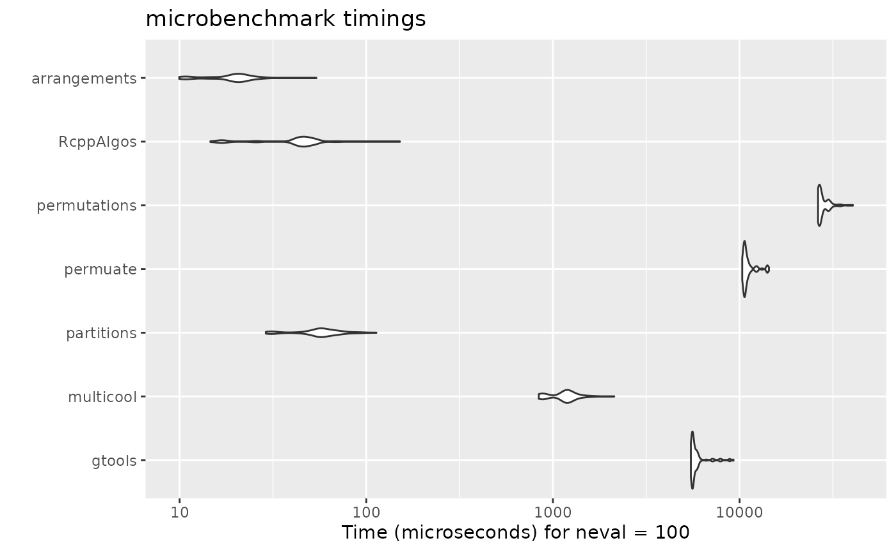
5-Permutations of 7 items
autoplot(microbenchmark(
gtools = gtools.permutations(7, 5),
RcppAlgos = permuteGeneral(7, 5),
arrangements = permutations(7, 5)
))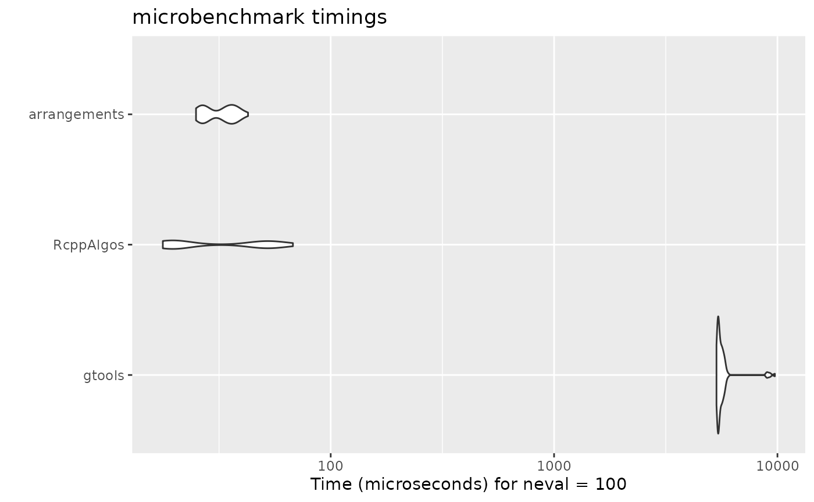
Permutations of multiset
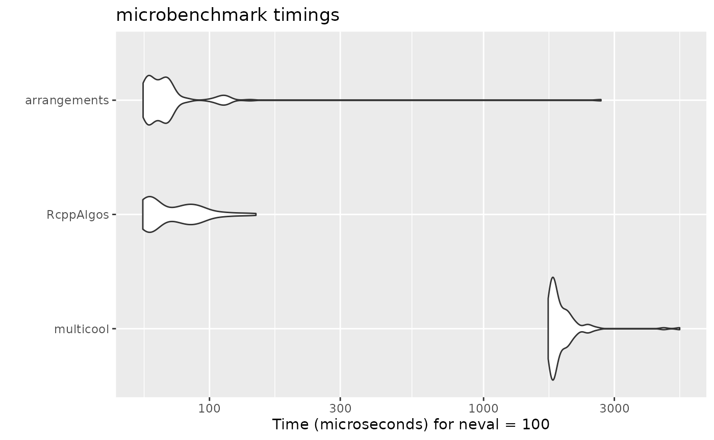
K-Permutations of multiset
f <- c(2, 1, 2, 1, 2)
x <- rep(1:5, f)
autoplot(microbenchmark(
multicool = allPerm(initMC(x)),
RcppAlgos = permuteGeneral(5, 6, freqs = f),
arrangements = permutations(k = 6, freq = f)
))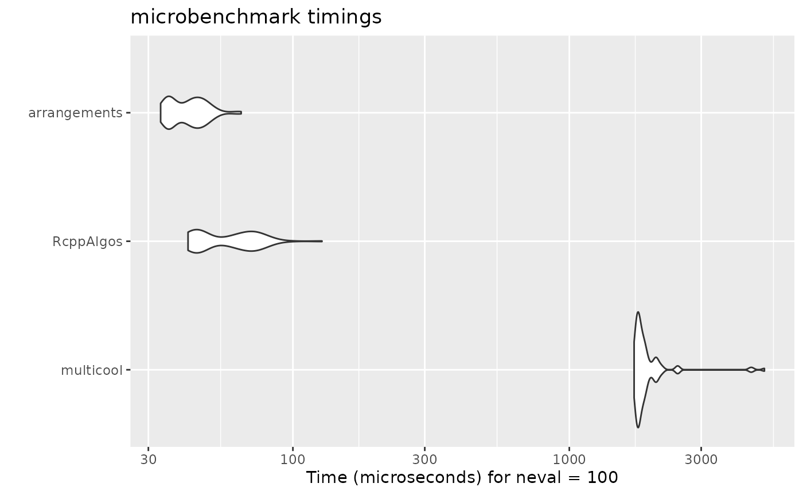
7-Combinations of 15 items
autoplot(microbenchmark(
gtools = gtools.combinations(15, 7),
combinat = combn(15, 7),
utils = utils.combn(15, 7),
RcppAlgos = comboGeneral(15, 7),
arrangements = combinations(15, 7)
))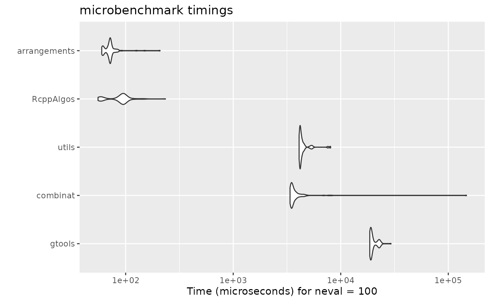
Combinations with replacement of 9 items
autoplot(microbenchmark(
gtools = gtools.combinations(9, 6, repeats.allowed = TRUE),
RcppAlgos = comboGeneral(9, 6, repetition = TRUE),
arrangements = combinations(9, 6, replace = TRUE)
))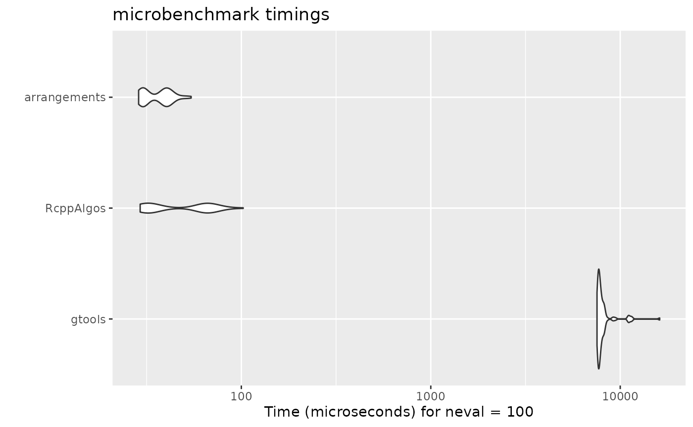
Combinations of multiset
f <- c(2, 1, 2, 1, 2, 2, 1, 2)
x <- rep(1:8, f)
autoplot(microbenchmark(
RcppAlgos = comboGeneral(8, 6, freqs = f),
arrangements = combinations(k = 6, freq = f)
))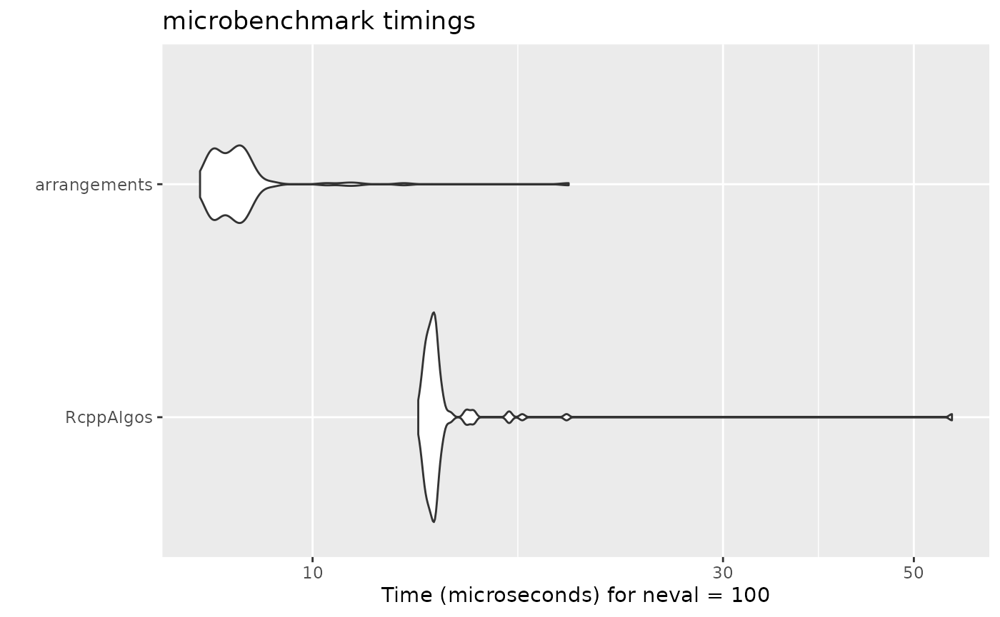
Partitions of 30
autoplot(microbenchmark(
partitions = parts(30),
arrangements = partitions(30)
))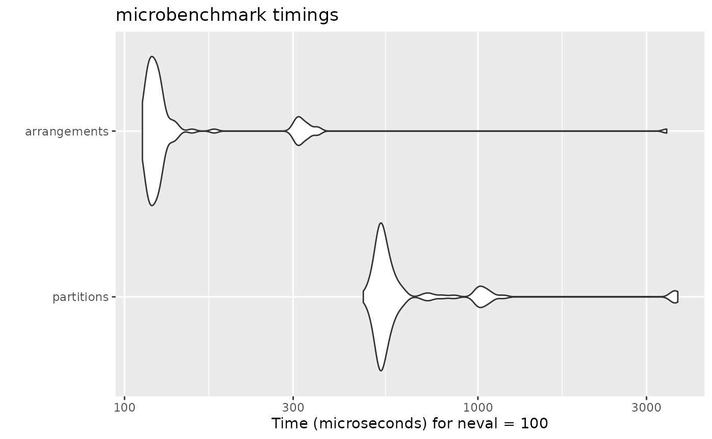
Partitions of 50 into 10 parts
autoplot(microbenchmark(
partitions = restrictedparts(50, 10, include.zero = FALSE),
arrangements = partitions(50, 10)
))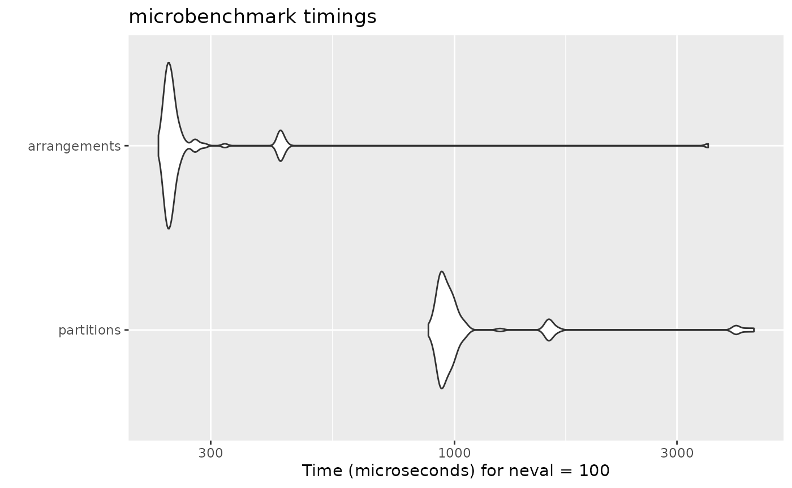
Partitions of 50 into distinct parts
autoplot(microbenchmark(
partitions = diffparts(50),
arrangements = partitions(50, distinct = TRUE)
))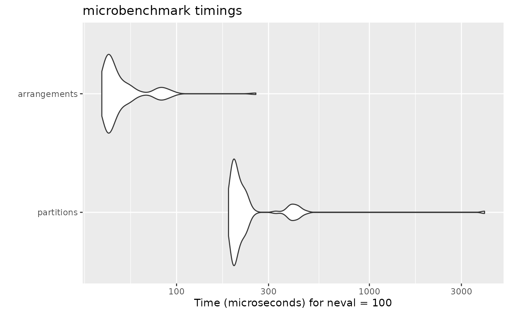
Compositions of 8
autoplot(microbenchmark(
partitions = partitions.compositions(8, include.zero = FALSE),
arrangements = compositions(8)
))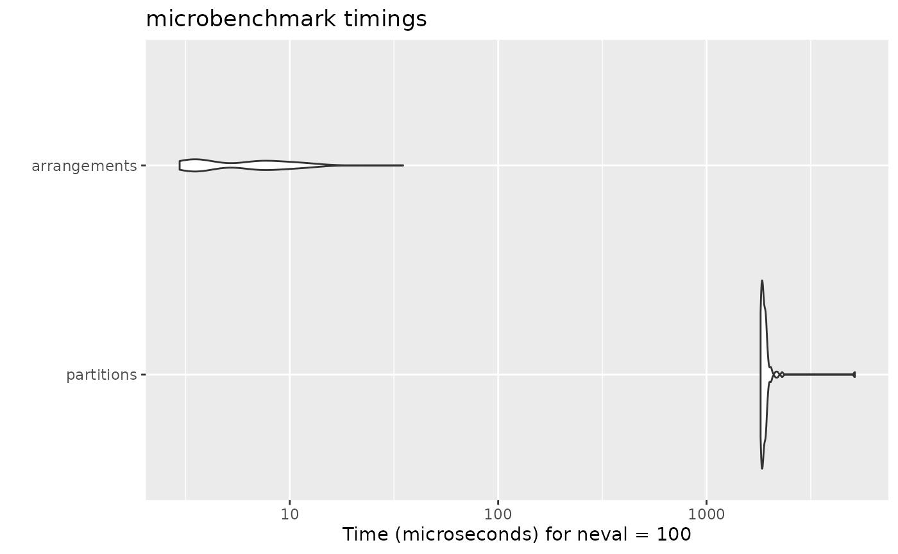
Compositions of 20 into 5 parts
autoplot(microbenchmark(
partitions = partitions.compositions(20, 5, include.zero = FALSE),
arrangements = compositions(20, 5)
))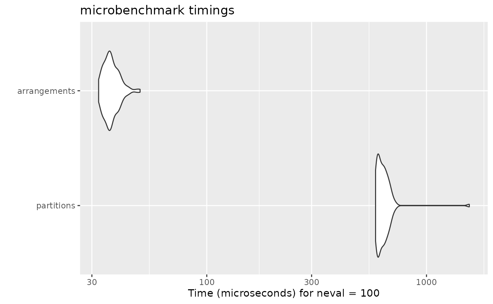